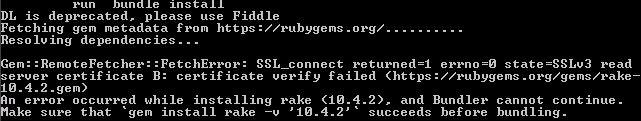

While attempting a “rails new” command, I was greeted with this lovely message:
An error occurred while installing rake (10.4.2), and Bundler cannot continue.

So after doing some research, it turns out all you need to do is a Gem update:
gem update --system
Unless of course, this results in this error like it did for me:
ERROR: While executing gem ... (Gem::RemoteFetcher::FetchError) SSL_connect returned=1 errno=0 state=SSLv3 read server certificate B: certificate verify failed (https://api.rubygem s.org/specs.4.8.gz)
It turns out this SSL certificate error is pretty easy to fix. Just issue these commands in this order:
gem sources -r https://rubygems.org
gem sources -a http://rubygems.org
gem update --system
What this does is: removes the secure Ruby site from the list of sites to use for updating gems (-r), then adds the insecure version temporarily.The gem update should succeed this time as should another “rails new” command. If you would like to switch back to the secure site, do the first 2 commands again but switch the -r and -a flags.